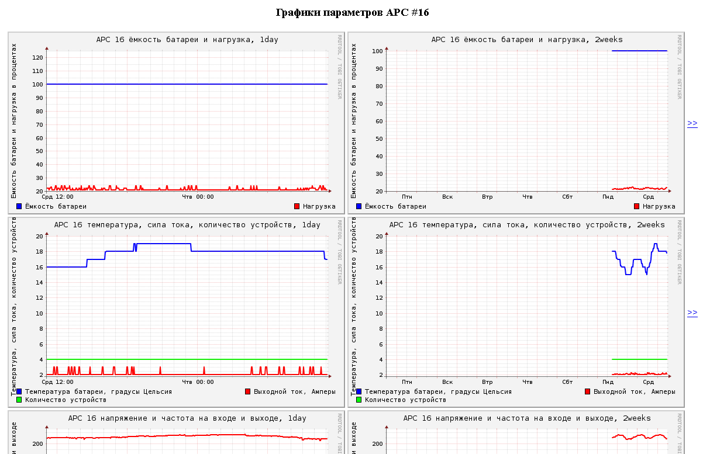

В моей сети я обнаружил 16 устройств, содержащих в своём составе SNMP-агент:
Недели две назад я попробовал воспользоваться для наблюдения за коммутаторами munin'ом, а затем cacti.
munin поддерживает мониторинг SNMP-устройств, но нельзя сказать, что это его основное назначение. Предназначен он скорее для наблюдения за Linux. В принципе, наблюдать за Linux можно теми же средствами SNMP, для чего нужно поставить SNMP-агент. Munin тут скорее имеет преимущество другого рода - для него легче писать плагины. Плагины для наблюдения за SNMP-устройствами, идущие в комплекте с Munin, запрашивают у оборудования по одному параметру за раз, что увеличивает нагрузку на сеть, на наблюдаемое устройство, на саму систему мониторинга и существенно замедляет сам мониторинг. Munin полностью перестраивает графики каждые 5 минут, что может показаться полезным только в том случае, если мониторингом занимается много людей. В случае, если мониторингом занимается мало людей, выгоднее перестраивать каждый график тогда, когда к нему обратятся.
Именно так делает Cacti, который предназначен именно для наблюдения за сетевыми устройствами по SNMP, обновляет графики только по требованию. Cacti - хорошая штука для наблюдения за сетевыми устройствами и компьютерами, но мне хотелось бы наблюдать ещё и за бесперебойниками и принтерами. Возможно для этого есть какие-то плагины и шаблоны, но их поисками я заниматься не стал. Ещё один момент, который мне не понравился - нельзя инвертировать входящий трафик так, чтобы на графике он оказался ниже оси времени (то есть можно, но нельзя выбрать операцию типа "инвертировать и умножить на 8"). В Cacti есть поля для настройки rrdtool graph, но там нет главного - возможности задавать произвольные функции в обратной польской записи, что позволяет сам rrdtool graph.
В общем, после знакомства с этими системами я узнал об их ограничениях и недостатках и решил изобрести собственный велосипед, ещё более ограниченный и кривой, но тем не менее заточенный конкретно на мои потребности. К тому же, было бы полезно изучить сами базовые инструменты - пакет net-snmp и rrdtool. Большим подспорьем в освоении этих инструментов для меня оказались материалы Сергея Евгеньевича Богомолова:
В сети довольно часто встречаются другие материалы по SNMP и RRDTool, однако в них заметны просто огромные куски, не бездумно, но лениво скопированные из первых двух статей. В частности, оттуда кусками вырываются описания функций построения графиков в rrdtool graph и описания выбора количества ячеек и отсчётов в ячейках RRA при использовании rrdtool create, которые автор подбирает похожими на поведение MRTG.
Чтобы не быть лентяем и не заниматься бездумным копированием, а действительно хоть в чём-то разобраться самостоятельно, я решил выбрать собственные настройки RRA. Количество ячеек выбирал таким образом, чтобы они охватывали какой-то принятый в календаре и часах период времени, чтобы каждая ячейка, в свою очередь, тоже подчинялась этому правилу, и чтобы количество ячеек было в пределах 250-350 штук, чтобы графики не были ступенчатыми, а действительно напоминали графики.
В результате остановился на следующих настройках:
RRA:AVERAGE:0.5:1:288 день с точностью до 5 минут RRA:AVERAGE:0.5:12:336 14 дней с точностью до часа RRA:AVERAGE:0.5:228:366 год с точностью до дня RRA:AVERAGE:0.5:2016:261 5 лет с точностью до недели
Смысл настроек RRA такой: создаётся кольцевой буфер из n ячеек, где каждая из ячеек содержит m отсчётов. Эти отсчёты при каждом использовании rrdtool update заполняются по кругу. Мы создали четыре таких кольцевых архива, каждый из которых будет заполняться по кругу, на каждом из очередных витков предыдущие данные будут затираться новыми. Значение 0.5 определяет, что значение из ячейки будет считаться определённым, когда в ней накопится хотя бы половина отсчётов. Для вычисления значения ячейки из значений в отсчётах применяется указанная функция. В данном случае это функция AVERAGE, что означает вычисление среднего значения отсчётов в ячейке. В ячейках могут храниться и неопределённые значения, например на тот случай, если в соответствующее время наблюдаемый объект был отключен или недоступен.
Настройки, конечно, спорные, но зато я не похож на других :-P
Для наблюдения за блоками бесперебойного питания я нашёл в интернете файл POWER-MIB. Имена наблюдаемых мной параметров и их значение перечислены ниже:
upsAdvBatteryCapacity.0 уровень заряда батареи в процентах upsAdvBatteryTemperature.0 температура батареи в градусах Цельсия upsAdvInputLineVoltage.0 напряжение в сети в Вольтах upsAdvInputMinLineVoltage.0 минимальное напряжение в сети за последнюю минуту в Вольтах upsAdvInputMaxLineVoltage.0 максимальное напряжение в сети за последнюю минуту в Вольтах upsAdvInputFrequency.0 частота напряжения в сети в Герцах upsAdvOutputVoltage.0 выходное напряжение в Вольтах upsAdvOutputFrequency.0 частота выходного напряжения upsAdvOutputLoad.0 уровень нагрузки в процентах от номинальной upsAdvOutputCurrent.0 сила выходного тока в Амперах upsBasicConfigNumDevices.0 количество подключенных устройств в штуках
Для наблюдения за МФУ я использую следующие SNMP-переменные:
Kyocera Mita FS-1028MFP
enterprises.1347.42.3.1.3.1.1.2 отсканировано страниц в копировальном аппарате enterprises.1347.42.3.1.4.1.1.1 отсканировано страниц на сканере enterprises.1347.46.10.1.1.5.3 отсканировано страниц всего (на копире и сканере) enterprises.1347.42.3.1.1.1.1.2 распечатано страниц в копировальном аппарате enterprises.1347.42.3.1.1.1.1.1 распечатано страниц на принтере enterprises.1347.43.10.1.1.12.1.1 распечатано страниц всего (на копире и на принтере)
Kyocera Mita FS-1118MFP
enterprises.1347.46.10.1.1.5.3 отсканировано страниц всего enterprises.1347.43.10.1.1.12.1.1 распечатано страниц всего
Kyocera Mita FS-1300D и KM-1650
1.3.6.1.2.1.43.10.2.1.4.1.1 распечатано страниц всего
Все эти параметры я искал с помощью snmpwalk и веб-интерфейса соответствующего МФУ. Когда на странице статуса МФУ было видно, что принтер находится в состоянии ожидания, я смотрел счётчик, выполнял команду snmpwalk и искал этот счётчик по тексту, выданному snmpwalk. МФУ KM-1650 оказалось ветераном среди всех МФУ, оно отпечатало около 280 тысяч страниц.
В итоге, для каждого вида устройства был создан собственный скрипт для создания базы, опроса устройства и внесения информации в базу данных RRD, создания HTML-страниц и для обновления графиков. У каждого из скриптов 4 соответствующих режима работы (для примера взят скрипт rrd-cisco2821.sh):
rrd-cisco2821.sh create id - создание базы данных для слежения за устройством.
rrd-cisco2821.sh update id ip community - получение отслеживаемых параметров с устройства с указанным IP и строкой сообщества community,
rrd-cisco2821.sh build id period - построение графиков за указанный период period. С используемыми настройками RRD и генерируемыми HTML-файлами имеет смысл использовать значения 1day, 2weeks, 1year и 5years. Хотя, если вы хотите сгенерировать графики за произвольный период, вы можете указать любое значение period, которое поймёт rrdtool.
rrd-cisco2821.sh html id - создание HTML-страниц, на которых будут использоваться сгенерированные графики.
Во всех режимах используется значение id - это произвольный текстовый или числовой идентификатор без пробельных символов, который позволит скрипту отличать одно устройство этого типа от другого. Он используется в именах RRD-файла, файлов графиков, HTML-файлов.
Скрипты можно взять здесь: rrd.tbz
А вот пример одной из HTML-страниц с графиками наблюдения за блоком бесперебойного питания:
Особого смысла в наблюдении за МФУ по графикам я не вижу. Гораздо полезнее было бы вести учёт этой информации в базе данных и строить, например, ежемесячные отчёты для планирования расходов на... расходные материалы. Да и остальные графики могут быть полезны скорее в аналитических целях, т.к. до превышения нагрузок на оборудование в моей сети ещё очень далеко. То есть, перестраивать и просматривать графики в моём случае стоит не чаще раза в месяц. Обновлять и просматривать графики чаще имеет смысл только если оборудование работает на пределе возможностей, но и в этом случае лучше всё-таки заменить оборудование на более мощное или каким-то образом перераспределить нагрузку заранее.